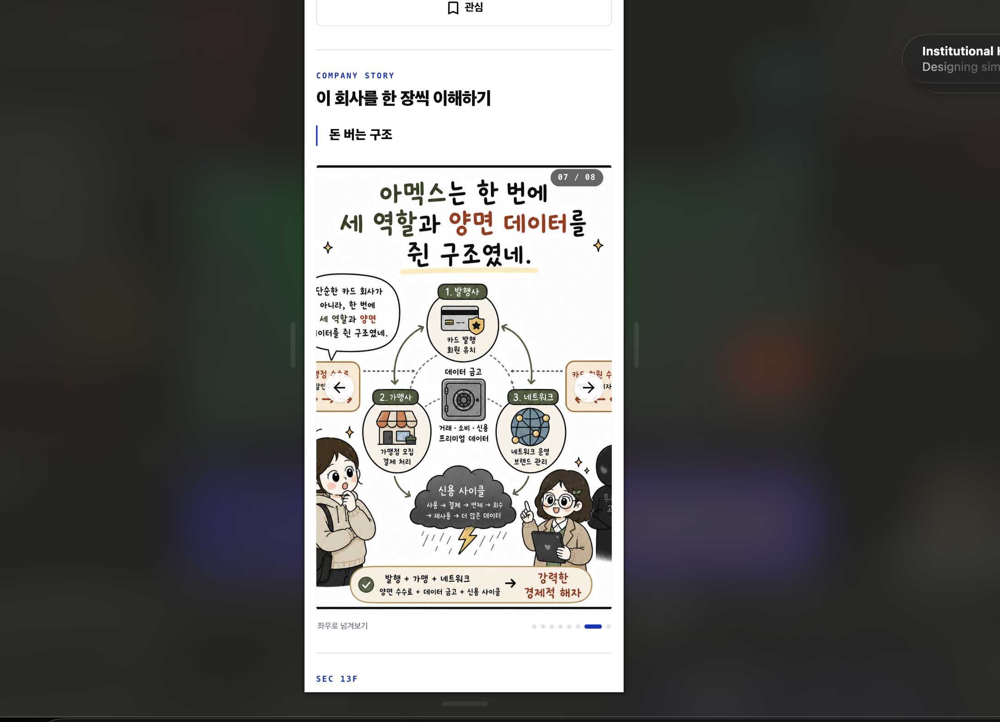
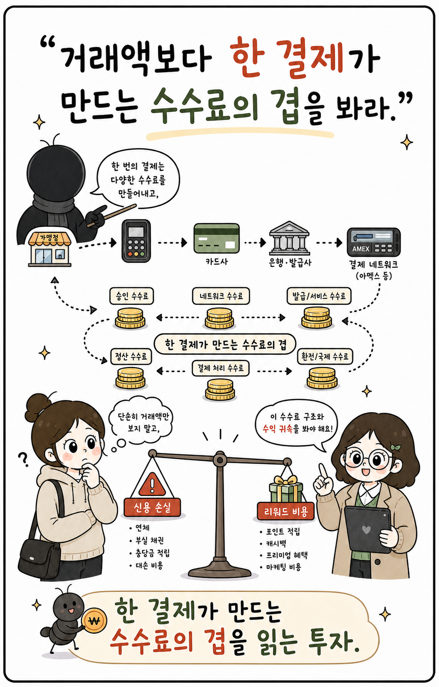

Company Story / responsive image review
정보가 든 그림은 ‘사진’처럼 자르면 안 됩니다.
회사 이야기는 텍스트와 도표가 포함된 인포그래픽입니다. 화면을 꽉 채우려는 object-fit: cover가 원본의 가장자리를 버리면서, 데스크톱·모바일에서 서로 다른 부분이 잘립니다.
현재 발생한 일

이 07번 원본 자체는 4:5라 기하학적으로 크게 잘리지는 않습니다. 다만 그림의 정보가 양 끝에 붙어 있고 화살표가 그 위에 겹쳐 “잘린 것처럼” 보입니다. 다른 비율의 장은 고정 4:5 + cover 때문에 실제로 잘립니다.
원인
현재 원본은 2:3, 4:5, 약 0.64:1 등 비율이 섞여 있습니다. 한 가지 4:5 프레임으로 강제하면 어떤 장은 반드시 잘립니다. 4:5 원본도 이미지 위 화살표와 가장자리 정보가 충돌할 수 있습니다.
- 표시 컴포넌트는 고정
aspect-[4/5]프레임입니다. - 이미지는
object-cover라서 프레임을 채우기 위해 가장자리를 제거합니다. - 업로드 시 실제 가로·세로 크기를 저장하지 않아, 화면은 어떤 장이 더 긴지 알 수 없습니다.
권장 원칙: ‘고정 캔버스 + 전체 보이기’
지금: Cover — 프레임은 예쁘지만 정보가 손실됨
잘림

바꿀 방식: Contain — 원본 전체를 안전하게 표시
원본 전체
여백은 실패가 아니라 ‘안전 영역’입니다. 흰색 또는 시리즈 전용 아주 옅은 배경을 사용하면, 짧은 비율의 장도 동일한 카드 안에서 안정적으로 보입니다.
표시 규칙
| 장소 | 화면 규칙 | 상호작용 |
|---|---|---|
| 회사 상세 | 시리즈 공통 2:3 세로 캔버스. 이미지는 contain, 카드 높이는 슬라이드마다 변하지 않음. 데스크톱은 최대 높이 72vh로 제한. | 탭하면 전체 화면 뷰어. 화살표는 이미지 바깥, 키보드 방향키·스와이프·진행 점 모두 지원. |
| 모바일 | 좌우 16px 여백 안에서 폭 100%. 2:3 캔버스를 그대로 사용해 작은 글자와 도표를 보존. | 손가락 스와이프. 화살표와 카운터는 이미지 위가 아니라 안전한 상단/하단 바에 배치. |
| 펄스 피드 | 같은 2:3 렌더러를 재사용. 정보가 든 이미지를 피드 썸네일처럼 자르지 않음. | 처음 한 장을 온전히 보여주고, 탭하면 전체 시리즈 뷰어/회사 상세로 이어짐. |
업로드부터 표시까지
1. 원본 업로드
원본은 보존하고, 가로·세로·파일 크기를 저장합니다.
원본은 보존하고, 가로·세로·파일 크기를 저장합니다.
→
2. 2:3 표시본 생성
가운데 배치 + contain. 원본을 자르지 않고 동일 캔버스로 정규화합니다.
가운데 배치 + contain. 원본을 자르지 않고 동일 캔버스로 정규화합니다.
→
3. 공통 렌더러
회사 상세와 펄스가 같은 표시본·같은 규칙을 사용합니다.
회사 상세와 펄스가 같은 표시본·같은 규칙을 사용합니다.
- 관리자 업로드 화면은 2:3 실제 미리보기를 보여주고, 비율이 다르면 “여백을 넣어 맞추기”를 기본값으로 선택합니다.
- 썸네일만 필요한 곳에는 별도의
thumbnail모드를 둡니다. 이때만cover를 허용하며, 본문용 인포그래픽에는 적용하지 않습니다. - 기존처럼 4:5를 유지할 수도 있지만, 현재 원본 8장 중 다수가 2:3 계열이라 2:3가 손실이 가장 적습니다.
✓
결론
회사 이야기는 2:3 공통 캔버스 + object-contain + 전체 화면 뷰어로 정리하는 것이 맞습니다. 첫 단계에서는 데스크톱/모바일용 파일을 따로 만들 필요가 없습니다. 원본의 안전 영역을 보존하는 한 벌의 세로 이미지가 두 환경에서 동일하게 재사용됩니다.
회사 이야기는 2:3 공통 캔버스 + object-contain + 전체 화면 뷰어로 정리하는 것이 맞습니다. 첫 단계에서는 데스크톱/모바일용 파일을 따로 만들 필요가 없습니다. 원본의 안전 영역을 보존하는 한 벌의 세로 이미지가 두 환경에서 동일하게 재사용됩니다.